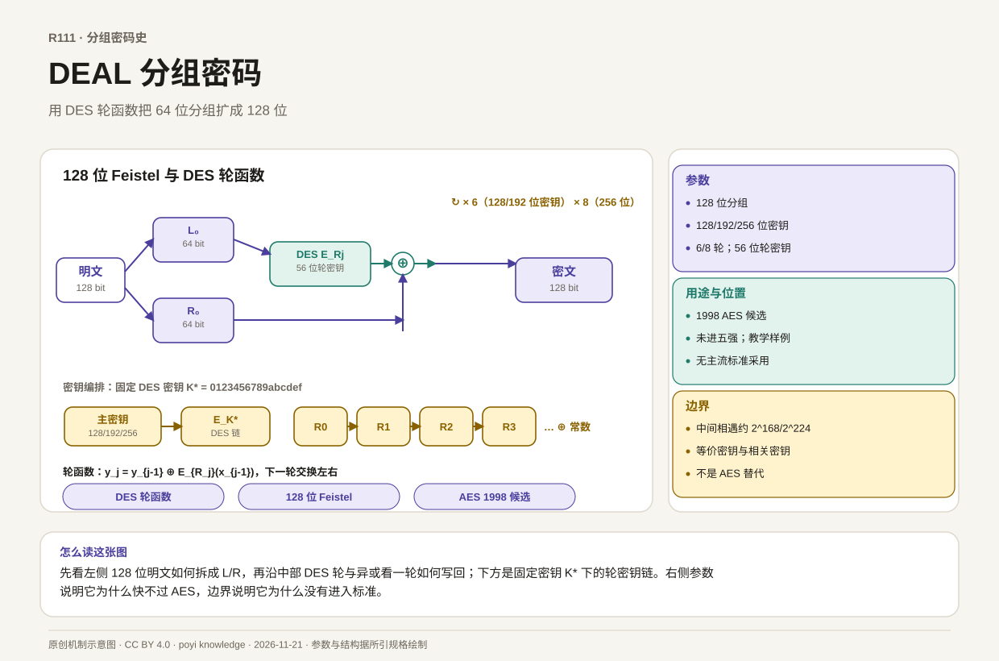
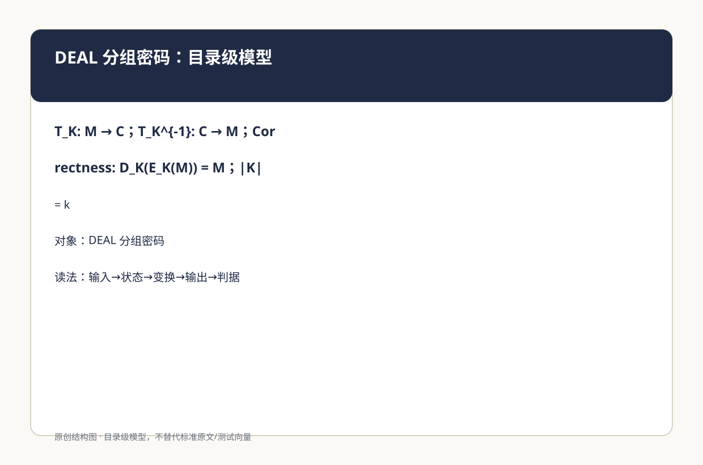

原理与机制
算法：DEAL 分组密码（DEAL block cipher）。### 128 位分组、64 位半块
DEAL 把 128 位明文拆成左右各 64 位，做平衡 Feistel。轮函数不是新的 S 盒，而是直接用 DES 加密一个 64 位半块：y_j = y_{j-1} ⊕ E_{R_j}(x_{j-1})，下一轮交换左右。每个轮密钥名义上是 64 位 DES 密钥，实际使用 56 位，奇偶位被忽略。### 轮数与密钥编排
DEAL-128 与 DEAL-192 跑 6 轮，DEAL-256 跑 8 轮。密钥编排用固定 DES 密钥 0123456789abcdef 做 E，把主密钥的 64 位块 K0、K1……链成 R0 = E(K0)，R_i = E(K_i ⊕ R_{i-1} ⊕ 常数)。解密按相反顺序使用同一套轮密钥。

为什么重要
1990 年代 DES 仍有大量硬件和分析积累。DEAL 的目标是保留这些积累，同时把 64 位分组翻倍到 128 位，避开匹配密文攻击；128 位分组给出 2^64 的生日界。它的轮函数直接调用 DES，设计者认为这比重新造 S 盒更“保守”。### 为什么没进 AES 决赛
DEAL 的速度接近 Triple DES，远慢于为 AES 竞赛优化的专用候选。NIST 要的是高吞吐、低延迟、宽平台实现，DEAL 的“复用旧硬件”反而成了性能包袱；随后 Kelsey–Schneier 与 Lucks 的分析又暴露了密钥编排和轮数余量问题。
应用与实例
DEAL 在 1998 年由 Richard Outerbridge 提交 AES 竞赛，没有进入五个决赛算法。它今天更适合作为“如何用现有分组密码构造更大分组”的教学样例，而不是生产算法。### 工程位置
没有主流标准采用 DEAL；现代存储和协议用 AES-XTS、AES-GCM。DEAL 与 Ladder-DES 的亲缘关系让它在 Feistel 构造和安全证明文献里仍有参考价值，但工程选型不会把它当 AES 替代。

边界与攻击面
Lucks 在 FSE 1999 给出针对 DEAL-192 的证书性攻击：利用 6 轮 Feistel 的轮密钥可分离性，在大量选择密文下把密钥搜索空间显著缩小。论文同时指出 6 轮 DEAL 的中间相遇上界约 2^168、8 轮约 2^224，说明有效密钥长度低于名义值。攻击需要巨大的选择密文量，属于“证明设计不够稳”的证书性结果，不是随手可用的破解。### 密钥编排与等价密钥
Kelsey–Schneier 在 SAC 1999 发现 DEAL 的密钥编排有结构性问题：DEAL-128 存在等价密钥对，找一对约需 2^64 次 DES；DEAL-192/256 只需 6 或 8 次 DES 就能构造 256 个等价密钥。他们还给出一条相关密钥攻击，约 2^33 个相关密钥、每个密钥 3 个明文。根因是轮密钥由固定密钥下的 DES 链生成，而奇偶位被忽略。DEAL 只提供 128 位分组置换；CBC、CTR 等模式、IV/nonce 和认证要另配。6/8 轮对现代分析余量偏小，不能当 AES 替代。
历史与背景
Lars Knudsen 在 SAC 1997 提出 DEAL，1998 年由 Richard Outerbridge 提交 AES 竞赛。DEAL 是 “Data Encryption Algorithm with Larger blocks” 的缩写，直说“DES 的更大分组版”。### 未标准化
DEAL 没有进入 AES 决赛，也没有成为 ISO 或 NIST 标准。它的生命主要在 AES 分析文献、Feistel 教学设计和对 DES 复用路线的反思里；2000 年 AES 定案后，DEAL 退出工程视野。
技术参数与复算边界
该条目的形式模型是 (C=E_K(P;r),\qquad P=D_K(C))。输入：输入：DEAL 分组密码的公开参数、密钥/随机数与消息；变量说明：P 明文，C 密文，K 密钥，r 随机化参数。 预期输出：按 DEAL 分组密码 的规范执行后得到可验证的输出或可比较的优势界。 复算必须给出输入、步骤、输出和单位；示例只演示流程，不替代标准测试向量。
复杂度由密钥长度、分组/状态规模、轮数、随机数质量和敌手模型共同决定；参数越界、版本差异与实现侧信道都可能使公式结论失效。已登记限制：该条目只给出形式模型与可复算步骤，不声称已完成生产实现、侧信道认证或第三方安全评估。
逐步示例与核验
形式模型与复算步骤
[C=E_K(P;r),\qquad P=D_K(C)]
DEAL 分组密码的公开参数、密钥/随机数与消息；变量说明：P 明文，C 密文，K 密钥，r 随机化参数。1.按算法规范编码输入。2.在密钥控制下执行轮函数。3.输出密文并检查长度与格式。边界：公式只覆盖已登记的参数与假设；参数取值、标准版本和实现细节仍以来源为准。
参考出处
- Wikipedia search entry for DEAL 分组密码. https://zh.wikipedia.org/w/index.php?search=DEAL%20%E5%88%86%E7%BB%84%E5%AF%86%E7%A0%81
- Handbook of Applied Cryptography (Menezes, van Oorschot, Vanstone). https://www.cacr.math.uwaterloo.ca/hac/